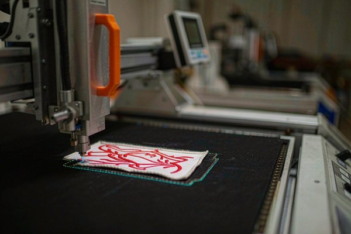
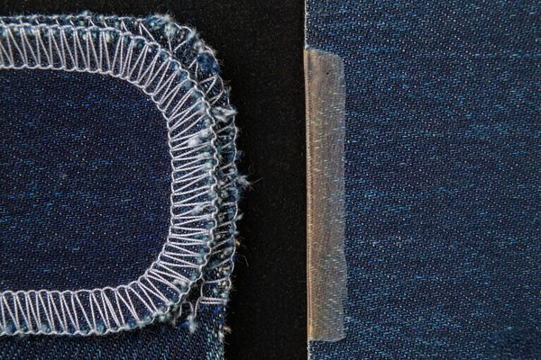

Custom Shapes & Die-Cut Patches: The Complete Design Guide
Most patches are rectangles because nobody asked for anything else. But a lightning bolt, a wolf silhouette, or a state outline cut precisely to its own edge costs barely more than a standard rectangle — and it photographs, memorizes, and sells like a custom piece. This guide covers custom shape patches end to end: the three cutting technologies and what each can and can't do, the geometry rules that keep outlines crisp, how shape quietly moves your unit cost, and the design patterns that make silhouettes work harder than text ever could.

1. Why Shape Is the Cheapest Way to Stand Out
Run a simple test: put ten brand patches side by side — nine rounded rectangles and one cut to the exact silhouette of a mountain range. At five meters, nine of them blur into generic embroidery. The tenth is identifiable from its outline alone, before anyone reads a word of text. Shape carries identity at a distance where color and lettering give up.
The economics surprise people. The embroidery itself usually costs the same whether the artwork sits on a rectangle or follows a bolt of lightning — thread count barely changes. What changes is the cutting step, and modern laser cutting has made that step fast enough that most factories (including us) treat basic custom shapes as a standard option rather than a premium service. The real cost driver isn't the shape itself; it's the complexity of the edge and how efficiently the shapes pack onto the base fabric — both covered in detail below.
Shape also solves a design problem that text never will: instant category recognition. A guitar-shaped patch announces "music brand" before a single stitch of the logo is processed. That is cognitive work your rectangular patch makes the viewer do manually.
2. Three Ways to Cut a Patch: Merrowed, Laser-Cut, Die-Cut
Every patch edge comes from one of three processes, and each imposes its own geometry rules:
| Method | How It Works | Shape Freedom | Best For |
|---|---|---|---|
| Merrowed border | A dedicated overlock machine wraps the edge in dense thread | Rounded, convex outlines only — the machine can't turn tight inside corners | Classic circles, ovals, rounded shields; uniform raised edge |
| Laser-cut edge | A laser traces and seals the outline, melting fibers against fraying | Nearly unlimited — sharp corners, deep notches, internal cutouts | Custom silhouettes, state shapes, sharp geometric designs |
| Die-cut (steel rule) | A custom-shaped steel blade presses through the fabric stack | Fixed per tool — one shape per die | Very large runs of one shape, where per-unit cutting cost matters most |
The merrow machine is the reason "rounded rectangle" became the industry default: it's the oldest, fastest edge, and it produces that durable braided rim everyone recognizes. But the merrow head physically cannot follow a sharp inside corner or a thin spike — the stitching jumps the gap or bunches up. If your shape has any concave detail, laser-cut is not a luxury; it's a requirement.
Laser cutting brings its own signature: the hot beam slightly melts and darkens the cut edge, leaving a thin, sealed rim that reads as intentional on most fabrics. On light-colored patches the subtle scorch line is worth knowing about in advance — it shows as a faint tan edge, which most designers either embrace or hide with a satin-stitch border (more on that below). For the full border-by-border breakdown, see our patch border options guide.
Die-cutting with a steel rule die only wins at volume: the die itself is a tooling cost, but once it exists, each patch cuts in a single press stroke. Below a few thousand pieces, laser cutting's zero-tooling flexibility wins every time.

3. Geometry Rules: What Outlines Can and Can't Do
Custom shapes fail at the edges, and always for the same physical reasons. Design within these limits and your patch will cut clean on the first try:
- Minimum corner radius: about 3 mm for merrowed edges. Sharper than that and the overlock stitching can't wrap the turn. Laser-cut handles corners down to roughly 1 mm radius before the sealed edge starts looking chewed.
- Spikes and points need a base. A lightning bolt tip or a star point thinner than 3 mm across will fray (laser) or look stubby (merrow). Let thin spikes flare toward their base — the silhouette stays sharp to the eye even when the physical edge carries a little extra fabric.
- Deep notches and internal cutouts: laser-cut only, minimum slot width around 4 mm. Internal holes — the gaps in a guitar's waist or between a moose's antlers — are absolutely possible and instantly elevate a patch, but they must be wide enough to cut and weed cleanly.
- Keep embroidery 2–3 mm inside the cut line. The outermost stitches need a fabric moat so the border never overhangs the edge. If your artwork bleeds to the silhouette, plan a border that follows the outline instead.
- Think in silhouette, not in details. The shape earns its keep when it's recognizable as a solid shadow. If your outline only makes sense once the interior embroidery is read, the shape isn't doing any work — simplify until the shadow alone tells the story.
This silhouette-first thinking pairs naturally with the simplification pass from our logo conversion guide: reduce the logo to its essential mass first, then decide whether that mass deserves to become the patch's physical outline.
4. Border Choices for Irregular Shapes
Borders and shapes are a system, and some pairings simply don't work:
Satin-stitch border (the shape-follower). Instead of a machine-wrapped merrow edge, the embroidery itself finishes the outline with a satin-stitched band 2–3 mm wide, running exactly along the silhouette — including every spike and notch. This is the standard partner for laser-cut custom shapes: the thread protects the cut edge, defines the silhouette against the garment, and can introduce a contrast color that frames the whole design.
No border (the pure die-cut look). Cut to the artwork's edge with nothing added, this is the modern streetwear style — flat, minimal, and heavily dependent on the laser's sealed edge for durability. It looks superb on shapes with strong silhouettes and light interior detail, and our text legibility guide's warning applies doubly here: with no border to separate patch from garment, contrast must come from the artwork itself.

Merrowed border (the shape constraint). Worth repeating because it's the most common factory pushback: merrowed edges only exist on convex, generously rounded outlines. Asking a factory to merrow a star is asking for a disappointed proof review. The honest rule: sharp or concave geometry goes laser or satin-border, never merrow.
5. How Shape Quietly Moves Your Cost
Patches are priced by stitched area and production complexity — but shape adds two quieter line items:
- Fabric utilization. Rectangles tile perfectly; a branching antler silhouette wastes the fabric around it. Some of that waste is unavoidable, and it shows up in the quote. Efficient workaround: nest shapes intelligently (factories do this automatically) or accept a slightly bulkier silhouette that packs better.
- The equivalent-size rule. Most shops price an irregular shape by its bounding box or by equivalent stitched coverage — an S-shaped patch that fits in an 8×5 cm box is quoted as an 8×5 cm patch, plus a cutting allowance. So an aggressive cut-out shape can cost the same as the rectangle it came from, which is exactly why "custom shape upcharge" is a myth worth challenging with a quote.
- Complexity thresholds. Beyond roughly a dozen deep notches or internal cutouts, weeding time (removing cut waste) starts adding real minutes per sheet. Extremely intricate silhouettes — lace-like outlines, chains of floating islands — are where shape complexity genuinely bills back.
The practical guidance: if you're sizing a patch from scratch anyway, our size guide's dimension tables apply to custom shapes the same as rectangles — design to the same area bands, then let the silhouette do the differentiating for free.
6. Five Design Patterns That Use Shape Well
- The state and country outline. The classic for a reason — civic pride is instant, the silhouette is pre-designed, and the shape legitimizes text placed inside it. Keep interior text at or above the legibility floors.
- The animal silhouette. Wolf heads, trout, eagles: choose poses with distinct profiles and let 2–3 colors fill the mass. Skip photorealistic interior detail; the outline is the message.
- The logo-shaped patch. Cut the patch to the exact outer contour of your existing logo — the single most underused pattern in corporate merch. The patch stops looking like a badge and starts looking like the brand itself.
- Negative-space cutting. Internal cutouts where the garment shows through — a mountain range with sky-gaps between peaks — create depth no embroidery layering can match. Laser-cut only.
- The word-as-shape. Set the brand name in bold block letters and cut the patch to the lettering's combined outline. It's a sticker-style look that thrives on hats and tote bags, and it forces the good kind of typographic simplicity we cover in the legibility guide.
7. Attachment: What Changes on an Irregular Edge
One last practical layer. Iron-on backing bonds hardest where the edge is straight and under firm pressure — which is precisely what custom shapes lack. On spiky or deeply concave outlines, adhesive-only attachment peels at the points first. Two reliable fixes: iron-on plus a securing stitch along the most exposed edge (the hybrid method from our adhesive guide), or full sew-on attachment, which remains bulletproof on any silhouette a needle can follow. For PVC and silicone custom shapes, sew through the molded channel as usual — geometry doesn't change that rule.
Frequently Asked Questions (FAQ)
Q1: Do custom-shaped patches cost more than rectangles?
Usually far less than people expect. Pricing follows stitched area, so an S-curve patch inside the same bounding box as a rectangle is often quoted identically, with only a small laser-cutting allowance added. Real premiums appear only at extreme intricacy — many internal cutouts or very thin spikes — or on huge die-cut runs where a steel rule die must be made.
Q2: Can a patch have holes or cutouts in the middle?
Yes — laser cutting handles internal holes freely, as long as each opening stays about 4 mm or wider so it can be cut and weeded cleanly. Merrowed borders cannot produce internal cutouts at all. Show-through holes work best when the garment color behind them is part of the design.
Q3: What is the sharpest corner a patch can have?
Laser-cut edges hold corners down to roughly a 1 mm radius; merrowed edges need about 3 mm of rounding and can't wrap true inside corners at all. If your design lives on sharp geometry, choose laser cutting or a satin-stitch border that follows the outline.
Q4: Will the laser-cut edge look burnt?
It leaves a thin, slightly darkened seal line — most visible on light fabrics, barely visible on dark ones. Designers either treat it as a rustic detail or cover it with a satin-stitch border in a contrast color. The seal itself is functional: it's what stops the fabric from fraying.
Q5: What's the minimum order for die-cut custom shapes?
With laser cutting, there is no minimum — one-piece orders are normal, which makes custom shapes accessible for test runs and small clubs. Traditional steel-rule die cutting only becomes economical at thousands of pieces of a single fixed shape, so for most buyers laser is the practical answer.
Conclusion: Let the Outline Do the Talking
Custom shapes are the rare upgrade that costs almost nothing and changes everything: pick a silhouette that reads as a shadow, respect the 3 mm geometry floors, match the border to the edge, and let the garment show through where it adds depth. The embroidery skill on display in a well-cut custom shape patch is subtle — but the shape does the shouting for it.
Send us your logo or a rough silhouette idea and we'll return a free digital proof within 12 hours, cut-line included, at no minimum order. Request a free quote and see what your brand looks like without the rectangle — or check the size guide first to spec the dimensions.